|
Plugin Casos de Uso |
|
El plugin de Casos de Uso es parte de la solución UML+ para la realización de diagramas según la especificación UML 2.0, este diagrama genera archivos con la extensión ".dcu" . Este diagrama permiten modelar la interacción de los actores con el sistema mediante los casos de uso Los elementos propios de este diagrama son:
Actor Un actor representa un sistema, usuario o cualquier otra cosa que pueda activar un caso de uso. Para generar un actor se debe seleccionar el icono correspondiente de la barra especifica del marco como se muestra en la Figura 1. 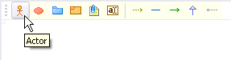 Figura 1. Botón de creación del actor El plugin de Casos de Uso hace uso del icono por defecto de actor. La información requerida para su creación es el nombre, aunque es posible relacionar al actor con una clase, bien sea que esta exista en un Diagrama de Clases que se encuentre abierto dentro del proyecto o creando una nueva y asociandolo a un diagrama de clases igualmente abierto. 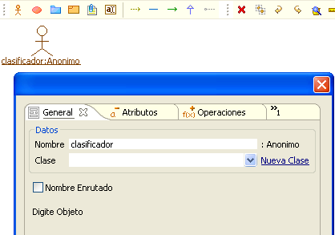 Figura 2. Datos generales del actor El actor mostrará los Atributos y Operaciones de la clase escogida, bien sea como Clase, Objeto o ambos, forma que se escoge al momento de seleccionar o modificar la clase. 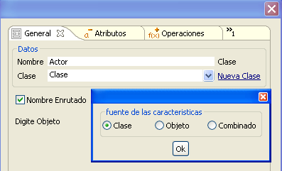 Figura 3. Fuente de características para el actor Caso de Uso Los casos de uso son uno de los elementos principales del diagrama. Para crear un caso de uso se debe seleccionar el icono en forma de ovalo rojo de la barra específica del marco. 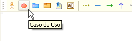 Figura 4. Botón de creación del caso de uso Para generar el Caso de Uso basta suministrar un nombre único dentro del diagrama, opcionalmente es posible asignar un Id, Descripción, Precondición Postcondición o asignar un Perfil a éste . 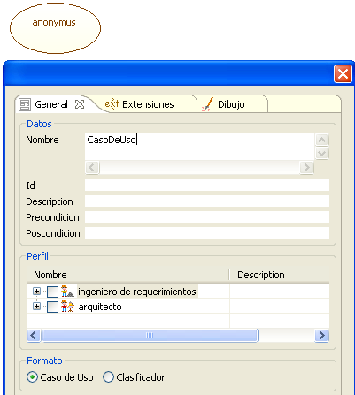 Figura 5. Dato mínimo para creación del caso de uso Dentro del marco es posible mostrar el Caso de Uso como tal o en la notación de Clasificador según sea asignado al momento de su creación o modificado en su especificación posteriormente. En la Figura 6 se ve a la izquierda la forma convencional y a la derecha la de clasificador. 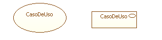 Figura 6. Representaciones del caso de uso Adicionalmente es posible agregar Puntos de Extensión a los casos de uso, desde la pestaña de Extensiones. Los Puntos de Extensión pueden agregarse al momento de su creación o posteriormente mediante la especificación, suministrando un nombre y seleccionando el botón agregar. 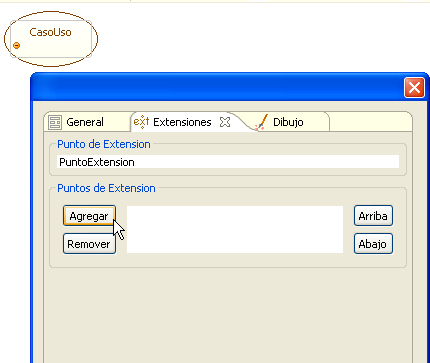 Figura 7. Puntos de extensión al caso de uso Sistema El Sistema sirve para identificar las fronteras a representar dentro del Caso de Uso. Para agregar un Sistema al diagrama se debe seleccionar el icono en forma de folder azul de la barra específica del marco 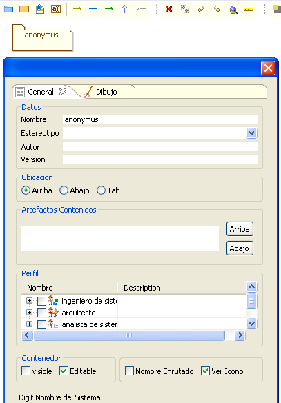 Figura 8. Creación de un sistema. Para su creación el sistema requiere de un nombre único dentro del diagrama, opcionalmente el estereotipo, autor o versión. El plugin de Casos de Uso permite tres ubicaciones para el nombre en la representación de Sistema, en la parte de arriba, de abajo o en el tab como se muestra en la imagen 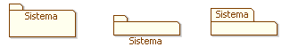 Figura 9. Diferentes representaciones gráficas de sistemas En la ventana de creación se encuentran los artefactos contenidos. Cuando se crea el sistema dicha sección se encuentra vacía y a medida que se agregan artefactos al diagrama es posible ver estos en la especificación del artefacto. Dentro de un sistema es posible crear Casos de Uso, actores y otros sistemas. La figura muestra los modos visible del contenedor (Sistema) , donde los elementos incluidos en el sistema son listados y se muestran dentro del artefacto, mientras que en el modo no-visible (SubSistema) los elementos solamente son listados. 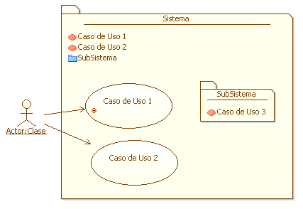 Figura 9. Agrupaciones de elementos bajo un sistema Es posible asignar al sistema un perfil, representado como un icono en la parte superior derecha del artefacto, para este caso al sistema se le ha asignado el perfil de "Sistema de Negocios", asignado desde el punto de vista de un Ingeniero de Sistemas. 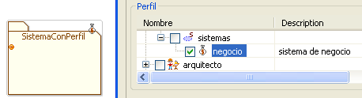 Figura 10. Agregando un perfil a un sistema Relación de Dependencia La relación de dependencia permite señalar la existencia de ésta entre casos de uso y sistemas. Pare crear una relación de dependencia se debe seleccionar el icono en forma de flecha con línea punteada de la barra específica del marco. 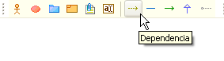 Figura 11. Botón de creación para una dependencia No es necesario agregar un estereotipo a la relación , de desearse puede escribirse sobre el campo de nombre o seleccionarse dentro de los estereotipos que incluye el plugin. 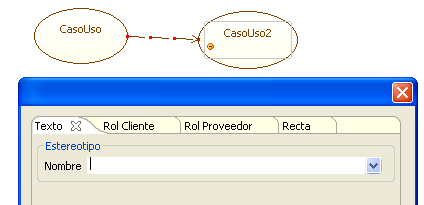 Figura 12. Creando una dependencia entre casos de uso Otros elementos opcionales de esta relación son los roles de proveedor y cliente, que se pueden configurar en las respectivas pestañas. Una relación entre dos Casos de Uso con un Estereotipo, Rol Cliente y Rol Proveedor se muestra en la Figura 13. 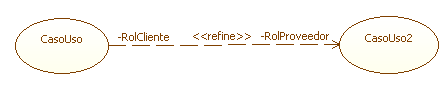 Figura 13. Estereotipos de cliente y proveedor para una dependencia Relación de Asociación La Relación de Asociación permite asociar actores con casos de uso y casos de uso entre si. Para generar una Relación de Asociación se debe seleccionar el icono en forma de segmento continuo de línea de la barra específica del marco. 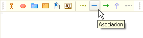 Figura 14. Botón de creación de asociación Al igual que con la Relación de Dependencia es posible adicionar un Estereotipo a la relación, bien sea uno suministrado por el usuario o uno que se escoja dentro de los predeterminados. 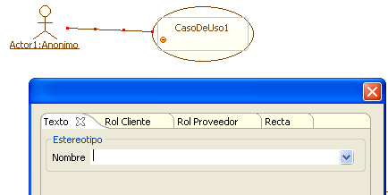 Figura 15. Ingresando el estereotipo de la asociación Esta relación permite además generar un Rol de Cliente y un Rol de Usuario con mayor detalle. Dentro de los parametros se puede incluir nombre, tipo, valor multiplicidad, visibilidad, modificadres y alcance para cualquiera de los dos roles. 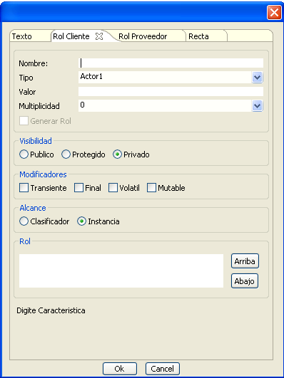 Figura 16. Rol del cliente El resultado agregando <<Estereotipo>> y roles de proveedor y cliente se muestra en la siguiente imagen. 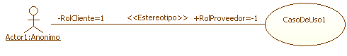 Figura 17. Rol del cliente y del proveedor Asociación Unidireccional Esta relación es similar a la Relación de Asociación. Adicionalmente señala al que inicia y al que recibe la comunicación. Para crear una Asociación Unidireccional se debe seleccionar el icono en forma de segmento horizontal de línea de la barra específica del marco. 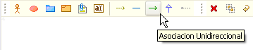 Figura 18. Botón de creación de asociación unidereccional La Asociación Unidireccional posee los mismos parámetros de configuración que la Relación de Asociación , un ejemplo de ésta asociación se ve en la siguiente imagen. 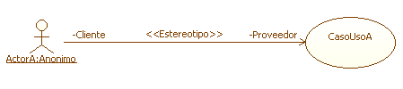 Figura 19. Estereotios de relación unidimensional Generalización El plugin de Casos de Uso también permite indicar generalizaciones en casos de uso y actores. Para crear una Generalización se debe seleccionar el icono de flecha hacia arriba de la barra específica del marco 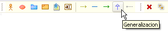 Figura 20. Botón de creación de generalización La generalización se dibuja desde el elemento particular al general, por lo que este tiene que se el orden de selección para conectar los elementos. A la generalización se le puede agregar un Estereotipo o se puede dejar sin éste. 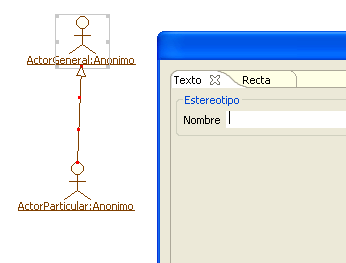 Figura 21. Creación de una generalización La generalización con el estereotipo por defecto <<Extends>> se muestra a continuación. 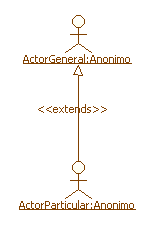 Figura 22. Estereotipo de una generalización |